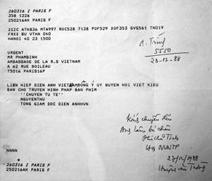
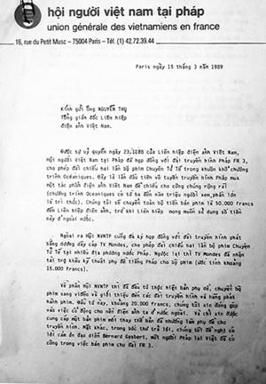
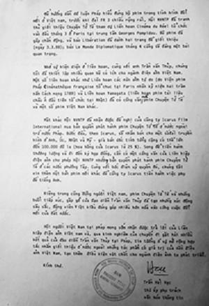
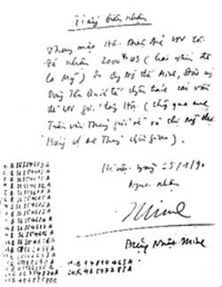
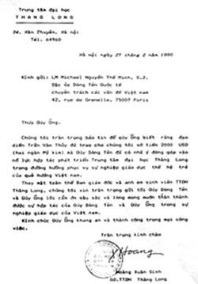
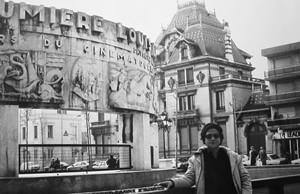

Người ta bảo chữ Tiền đi đôi với chữ Bạc. Chuyện xưa rồi, nhưng tôi buồn lòng nhận ra rằng ngày nay vì đồng tiền mà người ta bạc ác hơn ngày xưa nhiều.
☆
Than thở, thổ lộ về chuyện tiền bạc quả thực là điều bất đắc dĩ. Nhưng nói ra để mọi việc được tỏ tường, để thấy một bài học xương máu là: Chớ có dây vào chuyện tiền bạc, có ngày bị đập một phát chết tươi như con ruồi. Có nhiều chuyện để nói rằng trong chuyện này, nhà nước mà cụ thể là cơ quan quản lý Ðiện ảnh đã không đàng hoàng với những người làm phim.
Trong điện ảnh (tài liệu) nói riêng và trong văn học nghệ thuật nói chung rất hiếm một tác phẩm, khi ra đời đã nhận được sự quan tâm đón nhận của người xem trong và ngoài nước nồng nhiệt như trong trường hợp hai cuốn phim “Hà Nội Trong Mắt Ai” và “Chuyện Tử Tế”. Họ đón nhận nồng nhiệt trước tiên về mặt tư tưởng, tình cảm và nhận thức, họ chia sẻ trước thời cuộc trước nhân tình thế thái.
Tiếp đó, nói một cách thô thiển: Tiền!
Hai bộ phim đó nếu không được thừa nhận, không được tồn tại thì tôi là người liên lụy và rơi vào vòng lao lý. Ðược thừa nhận thu được tiền thì nhà nước hưởng. Tiền thu được rơi vào túi nhà nước hoàn toàn. Nhưng nếu nó được dùng vào việc có ích thì chẳng nói làm gì. Vấn đề là nó đi đâu, để làm gì. Cho đến bây giờ chẳng ai biết rằng:
Sau khi thượng cấp bật đèn xanh, “Hà Nội Trong Mắt Ai” và “Chuyện Tử Tế” được chiếu liên tục nhiều tháng trời khắp từ Bắc chí Nam, ở các rạp lớn, các bãi chiếu phim, các câu lạc bộ hội đoàn... Số tiền thu được do cho thuê phim, chiếu phim đi đâu?
Số tiền bán bản quyền cho hơn 10 đài Truyền hình lớn ở nước ngoài có trị giá ban đầu cả trăm ngàn USD. Số tiền ấy đi đâu?
Ðến đây, tôi lan man một chút, hình như chưa có nhà quản lý nào, nhà lý luận phê bình Ðiện ảnh nào lưu tâm đề cập tới việc thô thiển này. Ðương nhiên, tiền không phải là mục đích tối thượng, nhưng lần đầu tiên trong lịch sử phim tài liệu Việt Nam, việc hai bộ phim này thu lại khá nhiều tiền cho nhà nước cũng là chuyện đáng nghĩ đấy chứ.
Vậy mà trước đó “Hà Nội Trong Mắt Ai” bị cấm 5 năm (1982-1987) “Chuyện Tử Tế” bị cấm xuất ngoại (1988).
Thật trớ trêu, một chuyện đáng ghi vào Guinness Việt Nam mà các quí vị ngại ngùng, tỉnh bơ như như chẳng có chuyện gì. Hình như từ khi khai sinh ra phim ảnh Việt Nam, phim tài liệu chưa thu được đồng vốn nào đã bỏ ra; phần lớn nó thuộc loại phim “cúng cụ”; đầu tư tốn kém; vất vả long đong; duyệt lên duyệt xuống long trọng lắm, thế rồi chiếu vài ba lần, cuối cùng... bỏ kho. Hình như điện ảnh tài liệu, các xưởng làm phim tài liệu của Việt Nam đã tồn tại theo cách như thế hơn nửa thế kỷ và cứ tiếp tục sống vật vờ như thế.
Tất nhiên trong quá trình dài lâu ấy cũng xuất hiện một số tác phẩm có giá trị nào đó, đoạt giải thưởng nào đó nhưng tuyệt đối chưa có bộ phim nào thu lại được nhiều tiền đến thế cho nhà nước (có một số trường hợp thu được món tiền còm do bán tư liệu – những hình ảnh thời chiến tranh cho nước ngoài để họ sử dụng vào những phim tài liệu do họ sản xuất). Trước tình cảnh đó có người cũng xót xa, cũng bận tâm, cũng nghĩ ngợi lắm nhưng vì “định hướng”, vì “cờ đèn kèn trống” mà tặc lưỡi cho qua.
Mọi người đều biết, ở các nước phát triển, chuyện này hoàn toàn khác.
Trong bối cảnh đó, tôi và một số đồng nghiệp thường bị lấn cấn về chuyện tiền của dân bị tiêu pha một cách vô tội vạ và xảy ra triền miên.
Hồi ấy, sau những cấm kị ngăn cản răn đe không thành, “Chuyện Tử Tế” bung ra ở Liên hoan phim Quốc tế Leipzig tháng 11 năm 1988, những người quản lý thực sự rơi vào tâm trạng hoang mang và lúng túng. Họ cũng không hiểu được cấm đoán đe nẹt kiểm tra gay gắt như vậy mà tại sao bùm một cái nó vẫn có mặt và đoạt giải ở Leipzig.
Một cái “vinh quang”... khó chịu.
Sau khi hội họp hàng chục buổi ở các cấp để bàn thảo đối sách, họ đành cắn răng đi đến một quyết định: Liên hiệp Ðiện ảnh Việt Nam thay mặt nhà nước gửi công điện cho đại sứ Phạm Bình ở Paris, ủy quyền cho Hội người Việt Nam tại Pháp bán bản quyền cho các đài Truyền hình nước ngoài. Ông Christophe Walker giám đốc Incarus International Film, một công ty Mỹ đã ký hợp đồng làm trung gian bán bản quyền “Chuyện Tử Tế” cho một loạt các đài truyền hình trên thế giới. Incarus International Film là một công ty có uy tín, cho nên bán rất “được”.
Ðể gửi tiền bán bản quyền về nước được nguyên vẹn như hợp đồng, mọi chi phí giao dịch, lệ phí ngân hàng đều do anh chị em Hội người Việt Nam tại Pháp và tôi bỏ tiền túi ra lo hết. Bạn bè tôi ở Pháp, các anh chị trong Hội người Việt Nam tại Pháp đã bỏ ra gần hai mươi ngàn franc để hoàn tất mọi việc và chuyển nguyên vẹn số tiền đó về Việt Nam. Chi tiết số tiền đó có trong văn thư kèm theo của Hội người Việt Nam tại Pháp gửi Liên hiệp Ðiện ảnh Việt Nam. Trong đó câu: “ ...Bước đầu, theo Icarus, sẽ nhắm bán cho một số đài truyền hình ở Anh, Úc, Nhật, Mỹ - giá bán ước tính tổng cộng có thể lên đến 100 ngàn đô la... ”

Công điện của Liên hiệp Điện ảnh Việt Nam ủy quyền cho Hội người Việt Nam tại Pháp bán bản quyền “Chuyện Tử Tế”
☆
Tôi không đụng đến một xu. Bản tính của tôi được cha tôi dạy làm người là như vậy chứ không hẳn vì tôi e sợ sự liên lụy, mặc dù rõ ràng số tiền đó là mồ hôi nước mắt của cả đoàn làm phim, của hãng phim Tài liệu Trung ương, là sự dấn thân đánh đổi bằng chính sinh mạng của bản thân tôi như đã kể ở trên.
Cái tôi tìm kiếm là sự thanh thản trong lòng. Thật kỳ quặc, nếu phim vượt biên không thành công, phim không được giải thì tôi về nước ngồi tù hoặc hèn quá thì sống chui lủi tại Paris; phim vượt biên thành công, được giải (một Liên hoan phim có 256 phim tham dự mà chỉ có một giải vàng hai giải bạc - chuyện được giải là phiêu lưu chẳng kém chuyện Robinson Crusso) thì nhà nước cầm tiền, tiêu gì không ai được biết.
Cũng cần phải nói thêm rằng cho đến khi Liên hiệp Ðiện ảnh Việt Nam bị giải thể bởi kết quả thanh tra liên Bộ Văn hóa - Công an - Tài chính, cũng chẳng ai được biết số tiền đó thất thoát ra sao.
Vậy là đi tù là việc của tôi; tiêu tiền là việc của những người nhân danh nhà nước.
Nói thế cho nó minh bạch chứ phần tôi rất nhẹ lòng, nhẹ lòng vì cái đích tôi muốn tới đã tới. Phim của chúng tôi đã không bị trùm chăn đánh chết, đã tới được với người xem ở các quốc gia Âu, Á, Mỹ, Úc. Và điều quan trọng là thiên hạ có thể nể trọng người Việt Nam chúng ta hơn; con người với con người xích lại gần nhau hơn.


Văn thư của Hội người Việt Nam tại Pháp gửi Liên hiệp Điện ảnh Việt Nam về việc bán bản quyền “Chuyện Tử Tế”cho các đài Truyền hình nước ngoài.
Những bạn đồng nghiệp đã từng chung sức chung lòng với tôi nhưng có thể còn ít biết về chuyện tiền bạc, xin các bạn hiểu cho rằng, Trần Văn Thủy trước sau vẫn thế.
Cả cuộc đời làm phim, phụ trách các đoàn làm phim nhưng tuyệt đối chưa một lần nào tôi cầm tiền để chi chác hay để tư túi. Tôi cũng cám ơn các đồng nghiệp đã kiêm nhiệm giúp tôi việc này một cách thật lòng và minh bạch. Nhân đây cũng xin kể một câu chuyện nhỏ để các đồng nghiệp hiểu cho rằng tôi sợ dây với tiền nong như thế nào.
Tháng 3 năm 1989 trong khuôn khổ Liên hoan phim Hiện Thực Pháp (Cinema du Réel) phim “Chuyện Tử Tế” được chiếu 2 buổi ở Trung tâm Văn hóa mang tên Pompidou ở Paris, hàng trăm người phải ra về vì không mua được vé.
Ở tất cả các nước mà tôi có mặt, xem phim tài liệu phải mua vé, không có chuyện chiếu chùa. Có nghĩa là: Phim phải hay để người xem có thể móc ví lấy tiền mua vé vào xem.
Tiền bán vé phim “Chuyện Tử Tế” dùng vào việc gì là việc của Ban Tổ chức, tôi không biết và không được “phong bì” như ở Việt Nam và tôi cũng chẳng quan tâm. Tôi chỉ quan tâm phim của chúng ta, của Việt Nam đến với người xem ở những xứ văn minh như thế nào mà thôi. Về hiệu quả của các buổi chiếu phim “Chuyện Tử Tế” của tôi ở Pháp thì các báo Pháp đã viết nhiều.
Có nhiều khán giả nán lại rất lâu sau buổi chiếu để giao lưu, chuyện trò, trong số đó tôi chợt để ý đến một người đàn ông rất lịch lãm kiệm lời. Khi mọi người đã tản ra, ông đến bên tôi:
- Tôi là Michell Nguyễn Thế Minh, linh mục dòng Tên, trong bổn phận tôi được bề trên trao cho là việc quan tâm đến văn hóa Việt Nam. Thế mà hôm nay xem phim của ông xong tôi nhận thấy tôi có lỗi, tôi đã không hiểu gì và không làm được gì cho Việt Nam như bề trên đã giao phó.
- Thưa cha, cha qua đây chắc lâu rồi ạ?
- Tôi qua đây từ 1952, khi ấy tôi còn là một cậu bé.
Rồi ông kể nỗi bận tâm của một linh mục xa xứ, sự xúc động của ông qua thân phận từng con người trong “Chuyện Tử Tế” và ông không đắn đo ngỏ ý muốn giúp tôi một ngân khoản để tiếp tục những dự định sáng tác. Tôi xúc động trong sự tỉnh táo. Chuyện trò qua lại, chúng tôi lấy số phone, địa chỉ của nhau và tôi từ tốn nói rằng:
- Thưa cha! Việc phim của tôi được đông đảo khán giả Paris đón nhận ở Centre Pompidou này và được hàng vạn người xem qua đài truyền hình FR3 đã là phần thưởng vô cùng vinh hạnh với tôi rồi. Xin cảm ơn cha, cảm ơn thịnh tình của cha đối với Việt Nam, nhưng theo tôi có lẽ cha cho phép chuyển số tiền của cha về Việt Nam, cho một nơi nào đó có ý nghĩa và cần thiết hơn tôi.
Ông Michell Nguyễn hỏi luôn:
- Thế thì chúng ta chuyển tiền cho ai? Cho nơi nào trong phạm trù hoạt động văn hóa?
Tôi nghĩ nhanh trong đầu và nói:
- Thưa cha! Có lẽ đầu tiên là Trung tâm Ðại học Tư Thục Thăng Long, nó vừa mới khai trương. Tôi nghĩ chúng ta cần ủng hộ mô hình giáo dục dân lập.
Ông bằng lòng ngay và hỏi:
- Thế nếu muốn giúp một nơi thứ hai nữa thì đó là nơi nào?
- Thưa cha, Hội Ðiện ảnh Việt Nam, đó là một hội nghề nghiệp cần có sự chia sẻ.
Bây giờ nghĩ lại, lúc đó tôi nói tùy hứng. Tùy hứng giới thiệu Hội Ðiện ảnh chỉ vì ở đó có những anh chị em thân quý nhau. Thế thôi. Sau này cấp trên đã qui định các hội thuộc Liên hiệp Văn học Nghệ thuật trong đó có Hội Ðiện ảnh là Hội Chính trị Nghề nghiệp... Nếu sau này ông Michell Nguyễn biết cái Hội tôi giới thiệu là một Hội Chính trị gì đó thì không hiểu ông sẽ nghĩ gì về tôi.
Sau đó tôi có tới nhà thờ của ông ở 42 Rue Grénelle nhiều lần. Chỉ là để chơi, dự lễ, ăn cơm cùng các cha ở năm châu bốn biển về họp mặt. Số tiền mà cha Michell Nguyễn chuyển về Việt Nam cho Ðại học Thăng Long và Hội Ðiện ảnh Việt Nam là tiền mặt, đô la Mỹ.
Có cậu bạn trẻ từ Việt Nam qua du học bảo tôi:
- Anh đưa em số tiền đó, em giúp anh!
- Giúp anh làm gì?
- Em chỉ làm nhoáy một cái, úm ba la là ít nhất nó gấp đôi.
- Cách nào tài vậy?
- Em đặt mua xe máy cũ, đánh một quả container thì có số tiền gấp đôi!...
Tôi cám ơn anh bạn trẻ, nhưng tôi gửi ngay số tiền đó về Việt Nam và yêu cầu người nhận viết giấy biên lai, có ghi rõ ràng mã số từng tờ đô la để chứng minh được rằng số tiền đó không đi vòng vèo để dùng vào những việc khác. Những biên nhận đó của chị Hoàng Xuân Sính và của anh Ðặng Nhật Minh ghi số seri từng tờ đô la hiện tôi còn đang giữ.
☆


...tôi gửi ngay số tiền đó về Việt Nam và yêu cầu người nhận viết biên lai...
☆
Tôi mong các đồng nghiệp hiểu cho rằng một trong những lí do mà tôi còn tồn tại đến bây giờ là tôi minh bạch. Tôi hành xử như vậy để tránh hậu họa, tránh tai bay vạ gió có thể chụp xuống đầu. Không làm như vậy biết đâu người ta lại cho rằng tôi nhận tiền từ những “thế lực thù địch” thì khốn khổ.
Minh bạch về chuyện tiền bạc thôi còn những “chuyện làm nghề” thì tôi cũng không được minh bạch cho lắm đâu, thậm chí có người bảo tôi là ma quái.
Cũng nên kể thêm rằng sau đó cha Michell Nguyễn đã về Việt Nam, lần đầu tiên kể từ 1952. Cha bảo: “Tôi quyết định về Việt Nam sau khi xem ‘Chuyện Tử Tế’ và gặp anh ở Paris.”
Những ngày ở Việt Nam cha rất vui và phấn khích, cái gì cũng thích, cái gì cũng khen, khen cả những tấm biển ghi tên đường phố Hà Nội. Tôi cũng hơi lạ vì cha đã từng sống ở các nước văn minh, ở Roma và trong tòa thánh Vatican.
Thế mới hay sự đẹp xấu, hay dở, vui buồn, không hẳn là do bản thân sự vật mà còn do cách nhìn nhận của mỗi con người.
Cha cùng gia đình tôi đi chơi, thăm viếng đây đó, thưởng thức những món ăn Hà Nội. Cha bảo chúng ta hãy ngồi quán nào đó ở gần Ô Quan Chưởng. Suốt những ngày ở Việt Nam cha vui như chưa bao giờ được vui như thế, với gia đình tôi đó cũng là một kỉ niệm khó quên.
Nhân nói chuyện “tiền bạc” trong chuyện làm nghề, tôi kể thêm chuyện tôi “ mang phim tài liệu Việt Nam đi bán bản quyền ” xảy ra như thế nào.
Từ những năm cuối thập kỉ 80, tôi sang châu Âu nhiều lần và chứng kiến một hiện tượng không thể bỏ qua.
Ðó là các cháu thế hệ 2 thế hệ 3 của người Việt mình rất khó giữ được văn hóa cội nguồn. Từ ngôn ngữ, phong tục tập quán đến quang cảnh các lễ hội lịch sử Việt Nam...đều rất xa lạ với các cháu. Tôi thấy điều đó rất trái ngược với các cộng đồng khác như Trung Hoa, Ấn Ðộ, Ả Rập, Do Thái... Con em của họ dù ở đâu, bao nhiêu đời vẫn giữ được và nói được tiếng mẹ đẻ, vẫn thấm nhuần và giữ gìn văn hóa quê gốc.
Bị ám ảnh bởi chuyện này, về Việt Nam tôi mang đề tài này ra trao đổi với anh Ðặng Nhật Minh, lúc đó là Tổng Thư ký hội Ðiện ảnh, với anh Ma Cường lúc đó là Giám đốc hãng phim Tài liệu Trung ương. Tôi xin được in những phim tài liệu cũ về đề tài văn hóa lễ hội phong tục, di tích lịch sử... gồm 12 phim tất cả với ý định khi trở lại châu Âu, sẽ chiếu cho các cháu xem và khi về Việt Nam thì để lại biếu bà con.
Sau khi tôi trình bày và đưa danh sách các phim định in, các anh Ðặng Nhật Minh, Ma Cường đều ủng hộ. Tôi cũng cẩn thận trao đổi xin phép các tác giả của những bộ phim đó. Tất cả đều đồng thuận. Tôi tự bỏ tiền mua băng, thanh toán chi phí “in”.
Kỹ thuật băng hình thời đó rất thô sơ. Bản phim 35mm (cũ, xước) lắp vào một máy chiếu lưu động chiếu lên màn hình là tấm vải màu nước dưa. Anh Ðỗ Khánh Toàn dùng camera VHS quay lại. Xong xuôi, Giám đốc hãng phim giúp tôi làm công văn xin phép hải quan để được mang ra nước ngoài. Hải quan cho qua và tôi bay sang Tây Ðức, điểm đến đầu tiên trong chuyến đi dài ngày đó của tôi.
Hồi ấy do yêu công việc tôi xin cấp trên cho phép nhà quay phim Ðỗ Khánh Toàn sang châu Âu giúp tôi.
Anh Toàn vừa tới Frankfurt/M chân ướt chân ráo đã báo ngay cho tôi một tin sét đánh: “Ở nhà” đang điều tra việc tôi “ mang phim ra nước ngoài bán bản quyền ”. Anh Toàn còn kể rành mạch rằng anh ấy chứng kiến ông Tổng Giám đốc Liên hiệp Ðiện ảnh Việt Nam sai người cầm hồ sơ điều tra vụ này sang Bộ Công an.
Tôi chán nản vô cùng và cay đắng ném đống băng cassette ấy vào ngăn kéo và thề rằng không bao giờ mở ra nữa.
Ðể có nó chúng tôi đã mất bao nhiều thì giờ và công sức!
Ngẫm ra ở đời cái gì cũng cần có giới hạn, kể cả lòng tốt, lòng yêu nước.
Một người đứng đầu ngành Ðiện ảnh mà có thể nghĩ rằng tôi mang những cuốn phim chất lượng tồi tàn như thế sang châu Âu bán bản quyền!
Người ta cho rằng tôi hám tiền, vì tiền. Người ở nhà duy nhất công khai bênh vực tôi lúc đó là đạo diễn Thanh An. Bấy giờ ông là phó Tổng Thư ký Hội Ðiện ảnh Việt Nam. Ông bạn này hài hước bô bô lên rằng:
- Nếu tay Thủy bán được bản quyền cái mớ tạp pí lù ấy thì khi hắn trở về phải phong anh hùng!
Và khi tôi trở về sau đúng một năm ở châu Âu, nhiều con mắt tò mò đổ dồn vào tôi. Tôi được anh Kim Dao, Trưởng ban Thanh tra của hãng phim Tài liệu gọi đến. Anh cười khì khì và đưa tôi tờ giấy:
- Cậu cầm lấy làm kỉ niệm về tấm lòng của ông Tổng Giám đốc Liên hiệp Ðiện ảnh Việt Nam.
Tôi mở tờ giấy ra đọc. Ðó là văn thư viết tay yêu cầu anh Kim Dao thẩm tra và báo cáo việc tôi đem phim ra nước ngoài.
Tôi muốn nói thêm rằng: Thuở hàn vi, chưa có chức quyền, ông Tổng Giám đốc là con người dễ mến, dễ gần. Có đêm khuya khoắt, vừa từ biệt thự một quan to đi ra, hai anh em đạp xe dọc phố Quán Thánh, trời mưa lâm thâm. Ông lẩm bẩm: “ Ở Nga chúng nó làm ‘Bài ca người lính’, ‘Ðàn Sếu bay’ là có lí của nó. ‘Xét lại’ xét đi cái quái gì.”
Lúc ấy ông cũng có nỗi đau đời như tôi, như mọi người.
Vậy ra chẳng riêng gì ông mà người Việt Nam ta thường là vậy, khi có tí chức tí quyền vào thì hay khệnh khạng tinh tướng mà không biết rằng để được cái đó, họ đã đánh mất cái quí hơn rất nhiều.
Nhân đây tôi có một nhận xét, có thể đúng có thể sai, đó là hầu hết đồng nghiệp của tôi đều thích chức quyền, ngoại trừ một ít người phớt đời như anh Trần Vũ, anh Trần Phương bên phim truyện. Một vài người buộc phải dính líu với quản lí do yêu cầu của công việc, do sự tín nhiệm của anh em, còn lại hầu hết đều thích chức quyền. Rất nhiều người được nhà nước đào tạo công phu, cho đi nước ngoài 5 năm, 7 năm học chuyên môn để có một học vị nào đó trong điện ảnh như sáng tác, kỹ thuật, kinh tế. Lúc đầu cũng đắm đuối với nghề lắm nhưng khi được cất nhắc, có được một chức mọn nào đó, trưởng nọ phó kia thì phần lớn vứt mẹ nó nghề đi. Với họ, nghề chẳng là cái quái gì cả.
Tôi nghĩ không phải bỗng dưng mà người Việt Nam ta, từ xa xưa có phong tục thờ Nghề, thờ Tổ Nghề. Hình như Nghề có một cái gì đó thiêng liêng, cái gì đó thuộc về tâm linh, về nhân cách, nó vượt ra ngoài phạm vi đôi bàn tay khéo.

Nhà thờ Tổ Nghề Điện ảnh - Bảo tàng anh em nhà Lumière ở Lyon
Trở lại vài câu về chuyện tiền bạc.
Tôi mà ham tiền thì sập bẫy từ lâu rồi. Khi bắt đầu một công việc, một bộ phim, tôi không bao giờ vì tiền, vì danh lợi, vì để vừa lòng ai đó và cũng tuyệt đối không phải để được cất nhắc. Tôi trân trọng việc làm nghề, khi làm nghề tôi chỉ chăm chăm một điều: Có ích không? Người xem có sướng không?
Suy ra tôi muốn nói với các đồng nghiệp trẻ, những người làm phim tài liệu xấp xỉ tuổi tôi cách đây 50 năm rằng: Khi bắt tay vào làm phim thì hãy thể hiện những điều mình nghĩ, những khát khao của cuộc đời, những điều có ích cho xã hội cho đất nước một cách chân thành thẳng thắn.
Người ta bảo chữ tiền đi đôi với chữ bạc .
Chuyện xưa rồi, nhưng tôi buồn lòng nhận ra rằng ngày nay vì đồng tiền mà người ta bạc ác hơn ngày xưa nhiều.
Nếu tôi nghĩ sai thì xin thứ lỗi.
☆